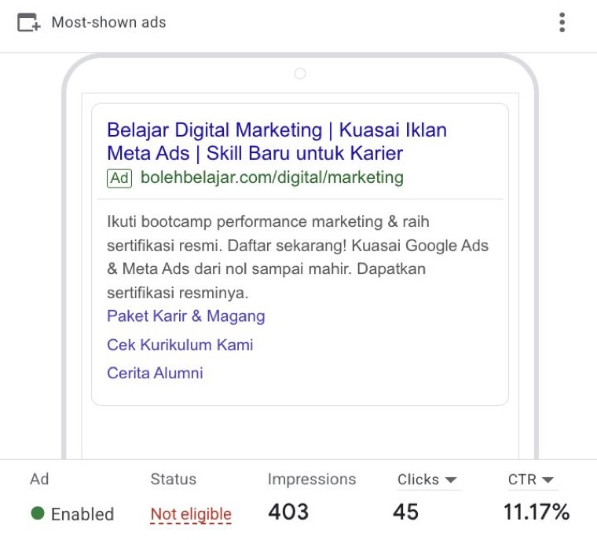

About the Project
A Google Search Ads campaign promoting Boleh Belajar’s Performance Marketing Bootcamp enrollment page.
Google Search Ads
Campaign Optimization.
Keyword strategy, ad copy testing, and budget allocation for a Performance Marketing Bootcamp campaign.
See My Work, Up Close ↘Against a 4% Campaign Target

A Google Search Ads campaign promoting Boleh Belajar’s Performance Marketing Bootcamp enrollment page.
Drive relevant traffic within a Rp30,000 daily budget and test which keyword groups and messages earn clicks.
I structured the campaign, selected keywords, wrote and tested ad copy, reviewed performance, and redirected budget after the first 48 hours.
01 / What the Numbers Show
Google Search Ads · May 2026
Product 1 · Generic 1
Across three ad groups
Google Search Ads
Against the 4% target
Compared With the Seven-Day Plan
| Metric | Target | Actual | Comparison |
|---|---|---|---|
| Total Spend | Rp210,000 | Rp222,382 | Above Budget |
| Impressions | 5,250 | 905 | Below Target |
| Clicks | 210 | 92 | Below Target |
| CTR | 4% | 10.17% | Above Target |
| Average CPC | Rp1,000 | Rp2,417 | Above Cost Target |
CTR was 2.54× the target. Impressions and clicks were below plan, while average CPC was Rp2,417 against the Rp1,000 target.
Product and Generic each recorded one conversion. The Competitor group was active for the first two days.
Full Campaign
“bootcamp digital marketing”
29 impressions · 9 clicks · 31.03% CTRPaused After Day 2
“belajar marketing”
68 impressions · 5 clicks · 7.35% CTRBudget Reallocated
“belajar marketing”
199 impressions · 24 clicks · 12.06% CTRAfter the first 48 hours, I paused the Competitor group and moved its budget to Generic keywords.
Source: Google Ads campaign results. Campaign, ad group, ad, and keyword figures are reported separately.
02 / My Work, Up Close
The campaign structure, copy, and optimization decisions I worked on.
Campaign Structure & Keyword Strategy
I tested Product, Competitor, and Generic keyword groups, with tailored ads for different search intents.
Ad Copywriting & Testing
I wrote and tested ad copy around learning ad platforms, gaining certification, and career opportunities.
Performance Review & Budget Reallocation
After 48 hours, I paused the Competitor group and moved its budget to Generic marketing education keywords.
03 / See the Work
Original screenshots from the existing portfolio.
“bootcamp digital marketing” recorded 9 clicks from 29 impressions, giving a 31.03% CTR.
The shown ad recorded an 11.17% CTR. Its performance is separate from the 10.17% campaign CTR.